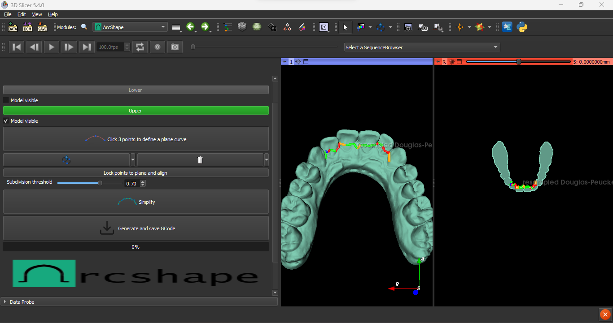

Plugins-3D slicer
Tools: Python, PyQt

{kind=link}
 Skin Model Maker
A 3D Slicer plugin written in Python.
Given an abdominal scan, the user can design a 3D printable skin model with entry holes and labels for
purposes of surgical planning. The clinician imports a CT scan and csv file
containing a series of x-y coordinates representing target surgical endpoints.
The software returns a model representing the outer skin surface punched through
with holes corresponding to the user csv file. The csv data and GUI interface allows
for adjustments of hole size, as well as ability to create adjustable
size and position of embossed labels.
Skin Model Maker
A 3D Slicer plugin written in Python.
Given an abdominal scan, the user can design a 3D printable skin model with entry holes and labels for
purposes of surgical planning. The clinician imports a CT scan and csv file
containing a series of x-y coordinates representing target surgical endpoints.
The software returns a model representing the outer skin surface punched through
with holes corresponding to the user csv file. The csv data and GUI interface allows
for adjustments of hole size, as well as ability to create adjustable
size and position of embossed labels.
Scientific computing and statistics
Tools: R, Python, ImageJ